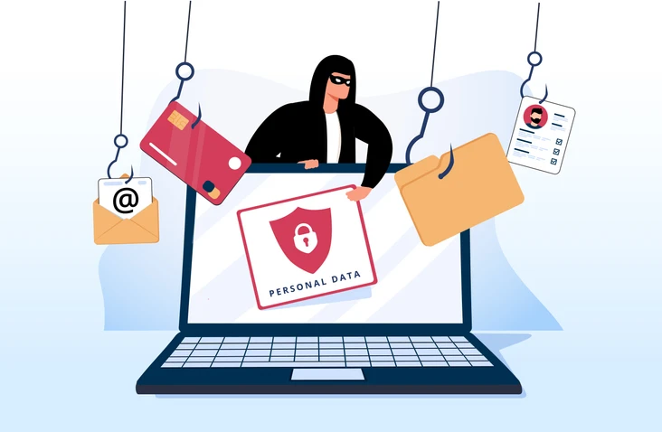

<!DOCTYPE html>
<html lang="it"></html>
<meta name="viewport" content="width=device-width, initial-scale=1.0">
<head>
    <meta charset="UTF-8">
    <meta name="viewport" content="width=device-width, initial-scale=1.0">
    <title>Come Difendersi dalle Truffe Online</title>
    <link rel="stylesheet" href="style.css">
</head>
<body>
  
    <nav>
        <ul>
            <li><a href="index.html">Home</a></li>
            <li><a href="tipi-truffe.html">Tipi di Truffe</a></li>
            <li><a href="come-difendersi.html">Come Difendersi</a></li>
        </ul>
    </nav>

     

    <h1>Come Difendersi dalle Truffe Online</h1>

    <p>Le truffe online sono una minaccia crescente. Proteggersi è possibile, ma è necessario sapere come riconoscerle e adottare misure preventive. Ecco alcune delle migliori pratiche per evitare truffe online.</p>

    <h2>1. Controllare sempre l'URL del sito</h2>
    <p>Molti truffatori creano siti web falsi che sembrano legittimi. Un modo semplice per riconoscere un sito sicuro è verificare l'URL: deve iniziare con "https://" e mostrare un lucchetto accanto all'indirizzo. Se un sito presenta errori di scrittura nell'URL o usa un dominio poco comune (come ".xyz" o ".club"), è un chiaro segnale che potrebbe essere fraudolento. Inoltre, se l'URL ti sembra troppo simile a quello di un sito noto, ma con piccole differenze, fai molta attenzione.</p>

    <h2>2. Non cliccare su link sospetti</h2>
    <p>I truffatori inviano spesso email o messaggi SMS contenenti link che sembrano provenire da aziende o istituzioni famose. Questi link possono portare a siti web fraudolenti o scaricare malware sul tuo dispositivo. Non cliccare mai su link provenienti da fonti sconosciute o che ti sembrano sospetti. Se hai dubbi, scrivi l'indirizzo del sito direttamente nel browser invece di fare clic sul link.</p>

    <h2>3. Usare password sicure e diverse</h2>
    <p>Le password sono il primo strumento di difesa contro gli accessi non autorizzati. Una password sicura deve essere complessa, lunga almeno 12 caratteri, e deve includere lettere maiuscole, minuscole, numeri e simboli. Non utilizzare la stessa password per più siti. Se uno dei tuoi account viene violato, tutti gli altri diventano vulnerabili. Un gestore di password può aiutarti a creare e memorizzare password sicure per ogni sito.</p>

    <h2>4. Attivare l'autenticazione a due fattori (2FA)</h2>
    <p>Molti servizi online offrono l'autenticazione a due fattori (2FA), un metodo di sicurezza che richiede due passaggi per accedere al tuo account: la password e un codice temporaneo inviato via SMS o tramite un'app. Anche se qualcuno ottiene la tua password, senza il codice temporaneo non potrà accedere al tuo account. Questa misura aggiunge un livello di protezione importante contro gli attacchi.</p>

    <h2>5. Verificare le recensioni</h2>
    <p>Prima di acquistare da un sito online o da un venditore sui social media, controlla le recensioni degli altri utenti. Le recensioni possono darti un'idea della legittimità del sito o del venditore. Se le recensioni sembrano troppo simili tra loro o tutte eccessivamente positive, potrebbe essere un tentativo di truffa. Cerca sempre opinioni su forum o siti di comparazione indipendenti per avere un quadro più chiaro.</p>

    <h2>6. Usare metodi di pagamento sicuri</h2>
    <p>I truffatori spesso cercano di spingerti a usare metodi di pagamento non tracciabili, come ricariche su carte prepagate o bonifici anonimi. Questi metodi non offrono alcuna protezione in caso di frode. È più sicuro usare sistemi di pagamento come PayPal o carte di credito con protezione antifrode. Se un sito richiede solo metodi di pagamento sospetti, è un chiaro segnale di allarme.</p>

    <h2>7. Tenere aggiornati antivirus e browser</h2>
    <p>Un antivirus aggiornato è fondamentale per proteggere il tuo dispositivo da siti web dannosi, virus e malware. Allo stesso modo, assicurati che il tuo browser sia sempre aggiornato, in quanto gli aggiornamenti correggono vulnerabilità di sicurezza che potrebbero essere sfruttate dai truffatori per infettare il tuo dispositivo.</p>

    <h2>Tabella con consigli di sicurezza</h2>
    <table>
        <tr>
            <th>Situazione</th>
            <th>Cosa fare</th>
        </tr>
        <tr>
            <td>Ricevi email sospette</td>
            <td>Non cliccare sul link. Controlla il mittente e verifica l'URL</td>
        </tr>
        <tr>
            <td>Vuoi fare un acquisto online</td>
            <td>Controlla l'URL, leggi le recensioni, scegli metodi di pagamento sicuri</td>
        </tr>
        <tr>
            <td>Usi la stessa password su tutti i siti</td>
            <td>Cambiala subito e usa un gestore di password</td>
        </tr>
        <tr>
            <td>Ti propongono un'offerta incredibile</td>
            <td>Fai delle ricerche. Se sembra troppo bello per essere vero, probabilmente lo è</td>
        </tr>
    </table>

    <footer>
        <p>Nome: Marco Guadalupi</p>
        <p>Classe: 4DI</p>
        <p>Email: marcguad07@gmail.com</p>
    </footer>
</body>
</html>
